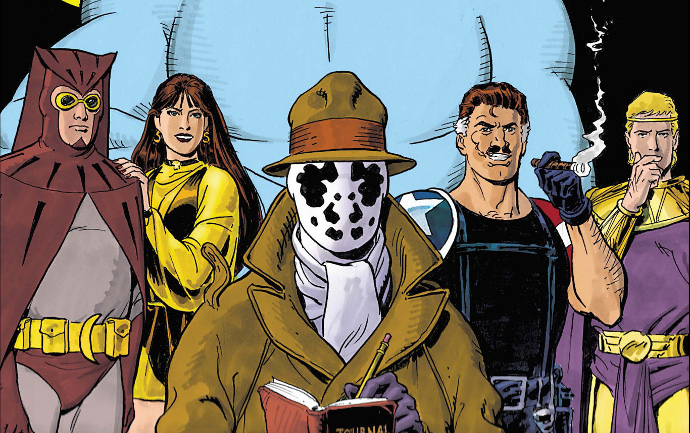

.webp)


Todo comienza con los Jóvenes Titanes originales en los 60. El equipo estaba compuesto por Robin, Kid Flash, Aqualad y Wonder Girl. Después se unieron Speedy, el compañero de Green Arrow, y se enfrentaron a problemas sociopolíticos como la Guerra de Vietnam y a conflictos raciales. En un momento de los 70 hubo un pequeño parón para el equipo original, pero cuando volvieron se les unió el héroe afro-americano Bumblebee y dividieron esfuerzos con la adición de un equipo de la costa oeste (¿creíais que solo los Vengadores habían hecho esto?). El primer equipo terminó cuando los héroes, que ya no eran estrictamente adolescentes, reconocieron el paso del tiempo y continuaron con sus vidas. Por tanto, varias versiones del equipo acabaron siendo revividas, reformadas o creadas de la nada a partir del relanzamiento en los 80, que cimentó a los Jóvenes Titanes como parte intrínseca del Universo DC para las décadas subsiguientes.
Watchmen se caracteriza por el realismo con el que aborda el mundo de los superhéroes. Los temas que se tratan en la obra destacan ante el lector la condición humana de los protagonistas. Uno de ellos es el de la percepción social de la autoridad, especialmente en el contexto de EE. UU. (ver Movimiento de Milicias en EE. UU.). El tratamiento que la novela realiza de esta temática se puede resumir en la frase «¿quién vigila a los vigilantes?». Desde el punto de vista weberiano, el ejercicio de la autoridad es raramente aprobado moralmente por aquellas personas que no la poseen; la autoridad institucionalizada simplemente se tolera debido a su poder social. Los aventureros de Watchmen, antes de la aprobación de la ley de Keene, son los representantes de la institución de los superhéroes. En un principio, su autoridad es respetada, aunque finalmente es puesta en duda y surgen peticiones de responsabilidad. Este cuestionamiento de la autoridad se inspira en la oposición a la guerra de Vietnam y en el movimiento por los derechos civiles, tratados en Watchmen.
Artículo principal: Before Watchmen, En el año 2012, DC Comics editó una serie de precuelas basadas en los personajes de Watchmen. Cada una de las precuelas se centraba en un personaje distinto y es obra de un autor diferente, como J. Michael Straczynski, Brian Azzarello, Darwyn Cooke, o Len Wein. La elección de artistas ligados al circuito independiente ha sido interpretado por la crítica como una muestra de respeto hacia la línea de trabajo de Moore
"Vigilantes" fue una maxiserie de 12 números publicada desde septiembre de 1986 hasta Octubre de 1987, escrito por Alan Moore e ilustrado por Gibbons Dave. Los eventos de la historia tienen lugar en 1985. El título toma su nombre de una traducción popular de una frase latina, "¿Quis Custodia Ipsos Custodios?"
Los Teen Titans debutan en la década de 1960, compuestos por los 5 compañeros (sidekicks) de los héroes más grandes de DC, uniéndose para luchar contra el crimen y forjar un vínculo que duraría hasta la su edad adulta.
Mientras que Robin, Wonder Girl, Speedy, Aqualad y Kid Flash han evolucionado hacia roles más maduros, todos ellos formaron el verdadero núcleo de los Teen Titans, incluso mucho más allá de su adolescencia, convirtiéndose en los pilares del grupo y estando aún hoy en día asociados a ellos (aunque sea intermitentemente) de una forma u otra."